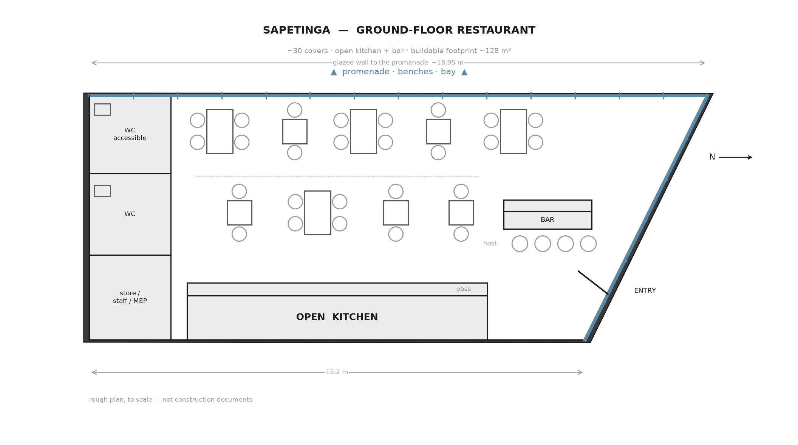

There is a small lot for sale in Sapetinga, in the Pontal district of Ilhéus, on the bay. It is a demolition site — an old house, half torn down, work stopped. It faces a public promenade: a sidewalk with benches on the near side, the street, another sidewalk on the water side, then a calm estuary with a low forested shore across it.
It is also a difficult shape. I wanted to see what a small restaurant on it would actually look like, and whether the numbers laughed me out of the room.
The lot
About 250 m². Roughly 12 m wide. The building next door on the east side sits right on the shared line and steps down to a single story where it meets this lot. The house behind is built to the rear line too.
The catch is the street. It runs across the front at 45 degrees, so the lot is not a rectangle — it is a right trapezoid with the northeast corner sliced off. The long west edge, about 19 m, is the one that faces the water.

What fits
One story. Roughly 30 covers. An open kitchen with a wood grill down the party wall, where you do not want windows anyway. A short bar and the entry on the angled street side. Two small bathrooms and the service space on the blind rear wall. And the whole 19-meter western wall as glass, onto the promenade and the bay.
![Concept render: the interior of a small warm restaurant as a three-quarter cutaway, with the scale plan's dimensions and labels overlaid. A floor-to-ceiling glass wall runs along the back, opening onto a promenade with benches and a calm bay at golden hour. An open kitchen with a wood grill and chefs runs along the near wall. Long communal banquette seating with colorful cushions, tables, and diners. Two small bathrooms and a store on the left end wall; the entry on the angled right end. Pale stone floor, light wood, tropical plants.](interior.jpg)
Only two sides of the box can open to light: the promenade wall and the angled street front. The east and rear walls are blind, built against the neighbors. The low evening sun sets over the water — either the best thing about the room, or straight in the diners’ eyes, depending on how it is shaded.
The numbers
| Lot | ~250 m², trapezoidal. Asking R$600,000. My estimate as a building lot is closer to R$450,000–550,000 — the ask carries a development premium the site cannot really deliver. |
|---|---|
| Buildable floor | ~128 m² after setbacks. Coverage and floor-area ratios never bind here; the setbacks and the shape do. |
| Restaurant | ~30 covers, ~90 m² of it usable dining after kitchen, bar and core. |
| Build cost | R$5,500–7,000 per m² for finished coastal quality — very roughly R$0.7–0.9M for shell and fit-out, before kitchen equipment. |
| The view | Real but modest from the ground — water through and past a large street tree. A clean panorama wants a floor of height. It is a bay, not the open ocean. |
The part that decides it
Parking. Local rules want a car space per residential unit, and there is no basement here — the water table is too high, 20 meters from the bay. A restaurant and its required parking do not both fit on a 128 m² ground floor.
So the first real question is not architectural, it is a permit question: can the parking requirement be reduced for small infill on the waterfront, or met off-site, or designed around? Until that is answered, everything above is a sketch.
The same envelope would take an upper dining deck — which is where the unobstructed view actually is, above the tree — or a small two-floor residence over the restaurant. Both make the parking problem harder, not easier.
A nice concept, real constraints, and a clear next question. Not a plan. A thing to think with.